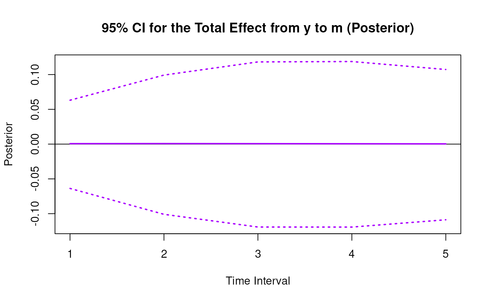
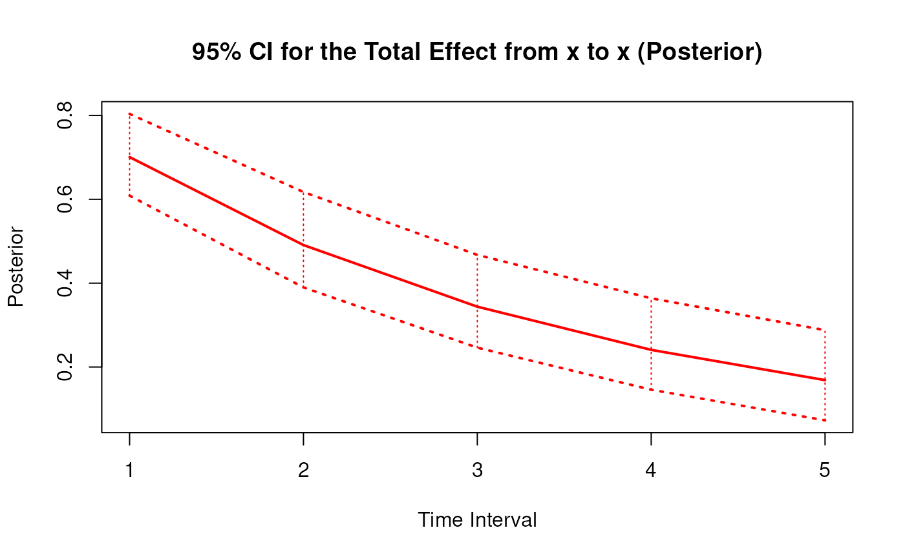
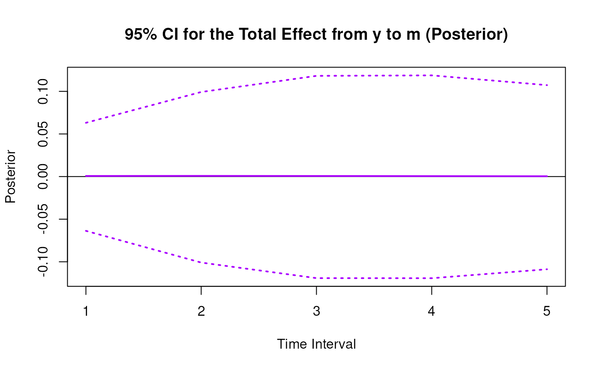
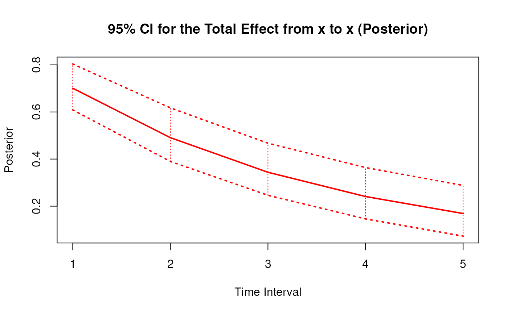
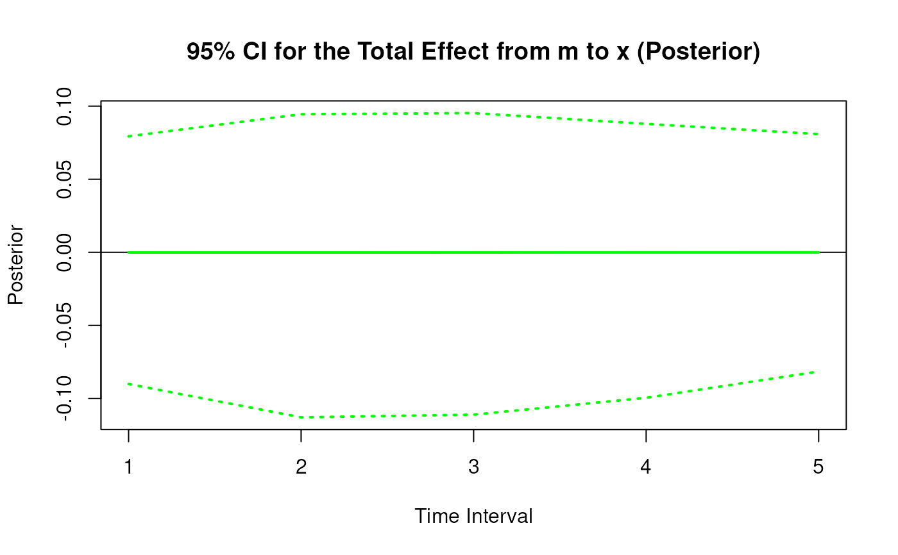
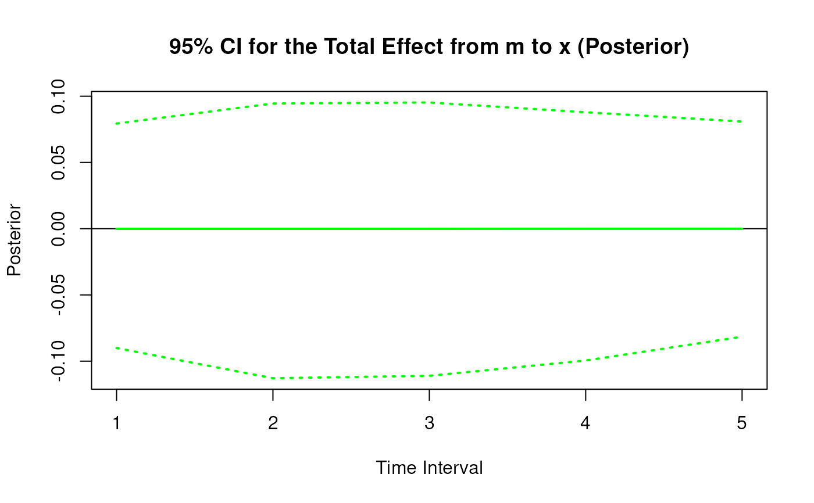

Posterior Sampling Distribution for the Elements of the Matrix of Lagged Coefficients Over a Specific Time Interval or a Range of Time Intervals
Source:R/cTMed-posterior-beta.R
PosteriorBeta.RdThis function generates a posterior sampling distribution for the elements of the matrix of lagged coefficients \(\boldsymbol{\beta}\) over a specific time interval \(\Delta t\) or a range of time intervals using the first-order stochastic differential equation model drift matrix \(\boldsymbol{\Phi}\).
Arguments
- phi
Numeric matrix. The drift matrix (\(\boldsymbol{\Phi}\)).
phishould have row and column names pertaining to the variables in the system.- delta_t
Numeric. Time interval (\(\Delta t\)).
- ncores
Positive integer. Number of cores to use. If
ncores = NULL, use a single core. Consider using multiple cores when number of replicationsRis a large value.
Value
Returns an object
of class ctmedmc which is a list with the following elements:
- call
Function call.
- args
Function arguments.
- fun
Function used ("PosteriorBeta").
- output
A list with length of
length(delta_t).
Each element in the output list has the following elements:
- est
A vector of total, direct, and indirect effects.
- thetahatstar
A matrix of Monte Carlo total, direct, and indirect effects.
Details
See Total().
References
Bollen, K. A. (1987). Total, direct, and indirect effects in structural equation models. Sociological Methodology, 17, 37. doi:10.2307/271028
Deboeck, P. R., & Preacher, K. J. (2015). No need to be discrete: A method for continuous time mediation analysis. Structural Equation Modeling: A Multidisciplinary Journal, 23 (1), 61–75. doi:10.1080/10705511.2014.973960
Ryan, O., & Hamaker, E. L. (2021). Time to intervene: A continuous-time approach to network analysis and centrality. Psychometrika, 87 (1), 214–252. doi:10.1007/s11336-021-09767-0
See also
Other Continuous Time Mediation Functions:
DeltaBeta(),
DeltaIndirectCentral(),
DeltaMed(),
DeltaTotalCentral(),
Direct(),
Indirect(),
IndirectCentral(),
MCBeta(),
MCIndirectCentral(),
MCMed(),
MCPhi(),
MCTotalCentral(),
Med(),
PosteriorIndirectCentral(),
PosteriorMed(),
PosteriorPhi(),
PosteriorTotalCentral(),
Total(),
TotalCentral(),
Trajectory()
Examples
phi <- matrix(
data = c(
-0.357, 0.771, -0.450,
0.0, -0.511, 0.729,
0, 0, -0.693
),
nrow = 3
)
colnames(phi) <- rownames(phi) <- c("x", "m", "y")
vcov_phi_vec <- matrix(
data = c(
0.002704274, -0.001475275, 0.000949122,
-0.001619422, 0.000885122, -0.000569404,
0.00085493, -0.000465824, 0.000297815,
-0.001475275, 0.004428442, -0.002642303,
0.000980573, -0.00271817, 0.001618805,
-0.000586921, 0.001478421, -0.000871547,
0.000949122, -0.002642303, 0.006402668,
-0.000697798, 0.001813471, -0.004043138,
0.000463086, -0.001120949, 0.002271711,
-0.001619422, 0.000980573, -0.000697798,
0.002079286, -0.001152501, 0.000753,
-0.001528701, 0.000820587, -0.000517524,
0.000885122, -0.00271817, 0.001813471,
-0.001152501, 0.00342605, -0.002075005,
0.000899165, -0.002532849, 0.001475579,
-0.000569404, 0.001618805, -0.004043138,
0.000753, -0.002075005, 0.004984032,
-0.000622255, 0.001634917, -0.003705661,
0.00085493, -0.000586921, 0.000463086,
-0.001528701, 0.000899165, -0.000622255,
0.002060076, -0.001096684, 0.000686386,
-0.000465824, 0.001478421, -0.001120949,
0.000820587, -0.002532849, 0.001634917,
-0.001096684, 0.003328692, -0.001926088,
0.000297815, -0.000871547, 0.002271711,
-0.000517524, 0.001475579, -0.003705661,
0.000686386, -0.001926088, 0.004726235
),
nrow = 9
)
phi <- MCPhi(
phi = phi,
vcov_phi_vec = vcov_phi_vec,
R = 1000L
)$output
# Specific time interval ----------------------------------------------------
PosteriorBeta(
phi = phi,
delta_t = 1
)
#>
#> Total, Direct, and Indirect Effects
#>
#> $`1`
#> interval est se R 2.5% 97.5%
#> from x to x 1 0.6999 0.0287 1000 0.6463 0.7612
#> from x to m 1 0.4974 0.0325 1000 0.4313 0.5561
#> from x to y 1 -0.0989 0.0345 1000 -0.1712 -0.0271
#> from m to x 1 0.0012 0.0236 1000 -0.0440 0.0471
#> from m to m 1 0.5999 0.0252 1000 0.5537 0.6525
#> from m to y 1 0.3997 0.0265 1000 0.3450 0.4468
#> from y to x 1 0.0002 0.0278 1000 -0.0546 0.0540
#> from y to m 1 0.0003 0.0283 1000 -0.0581 0.0495
#> from y to y 1 0.4999 0.0296 1000 0.4450 0.5604
#>
# Range of time intervals ---------------------------------------------------
posterior <- PosteriorBeta(
phi = phi,
delta_t = 1:5
)
plot(posterior)


 
# Methods -------------------------------------------------------------------
# PosteriorBeta has a number of methods including
# print, summary, confint, and plot
print(posterior)
#>
#> Total, Direct, and Indirect Effects
#>
#> $`1`
#> interval est se R 2.5% 97.5%
#> from x to x 1 0.6999 0.0287 1000 0.6463 0.7612
#> from x to m 1 0.4974 0.0325 1000 0.4313 0.5561
#> from x to y 1 -0.0989 0.0345 1000 -0.1712 -0.0271
#> from m to x 1 0.0012 0.0236 1000 -0.0440 0.0471
#> from m to m 1 0.5999 0.0252 1000 0.5537 0.6525
#> from m to y 1 0.3997 0.0265 1000 0.3450 0.4468
#> from y to x 1 0.0002 0.0278 1000 -0.0546 0.0540
#> from y to m 1 0.0003 0.0283 1000 -0.0581 0.0495
#> from y to y 1 0.4999 0.0296 1000 0.4450 0.5604
#>
#> $`2`
#> interval est se R 2.5% 97.5%
#> from x to x 2 0.4904 0.0373 1000 0.4259 0.5713
#> from x to m 2 0.6465 0.0399 1000 0.5693 0.7237
#> from x to y 2 0.0802 0.0380 1000 0.0010 0.1503
#> from m to x 2 0.0017 0.0264 1000 -0.0495 0.0525
#> from m to m 2 0.3606 0.0276 1000 0.3095 0.4173
#> from m to y 2 0.4395 0.0264 1000 0.3859 0.4863
#> from y to x 2 0.0002 0.0336 1000 -0.0641 0.0673
#> from y to m 2 0.0004 0.0333 1000 -0.0705 0.0589
#> from y to y 2 0.2500 0.0303 1000 0.1983 0.3168
#>
#> $`3`
#> interval est se R 2.5% 97.5%
#> from x to x 3 0.3440 0.0386 1000 0.2777 0.4246
#> from x to m 3 0.6318 0.0440 1000 0.5519 0.7199
#> from x to y 3 0.2500 0.0372 1000 0.1714 0.3168
#> from m to x 3 0.0017 0.0256 1000 -0.0501 0.0510
#> from m to m 3 0.2173 0.0292 1000 0.1619 0.2746
#> from m to y 3 0.3637 0.0257 1000 0.3161 0.4152
#> from y to x 3 0.0002 0.0308 1000 -0.0608 0.0603
#> from y to m 3 0.0004 0.0347 1000 -0.0716 0.0643
#> from y to y 3 0.1251 0.0263 1000 0.0769 0.1816
#>
#> $`4`
#> interval est se R 2.5% 97.5%
#> from x to x 4 0.2416 0.0363 1000 0.1785 0.3180
#> from x to m 4 0.5502 0.0462 1000 0.4682 0.6440
#> from x to y 4 0.3435 0.0356 1000 0.2702 0.4128
#> from m to x 4 0.0015 0.0243 1000 -0.0474 0.0484
#> from m to m 4 0.1313 0.0303 1000 0.0709 0.1930
#> from m to y 4 0.2685 0.0248 1000 0.2244 0.3195
#> from y to x 4 0.0002 0.0253 1000 -0.0502 0.0474
#> from y to m 4 0.0004 0.0346 1000 -0.0685 0.0677
#> from y to y 4 0.0627 0.0230 1000 0.0195 0.1144
#>
#> $`5`
#> interval est se R 2.5% 97.5%
#> from x to x 5 0.1698 0.0329 1000 0.1133 0.2379
#> from x to m 5 0.4503 0.0462 1000 0.3704 0.5467
#> from x to y 5 0.3678 0.0349 1000 0.2988 0.4364
#> from m to x 5 0.0013 0.0223 1000 -0.0434 0.0434
#> from m to m 5 0.0796 0.0300 1000 0.0210 0.1369
#> from m to y 5 0.1866 0.0233 1000 0.1463 0.2356
#> from y to x 5 0.0001 0.0197 1000 -0.0389 0.0364
#> from y to m 5 0.0003 0.0326 1000 -0.0628 0.0622
#> from y to y 5 0.0315 0.0217 1000 -0.0109 0.0786
#>
summary(posterior)
#> effect interval est se R 2.5% 97.5%
#> 1 from x to x 1 0.6998727303 0.02874419 1000 0.6462889460 0.76120035
#> 2 from x to m 1 0.4974115603 0.03250287 1000 0.4312565668 0.55614672
#> 3 from x to y 1 -0.0988698131 0.03450811 1000 -0.1711966562 -0.02712031
#> 4 from m to x 1 0.0012194592 0.02357514 1000 -0.0439685485 0.04709454
#> 5 from m to m 1 0.5999037176 0.02516146 1000 0.5536716508 0.65252806
#> 6 from m to y 1 0.3996936920 0.02651733 1000 0.3449678697 0.44677024
#> 7 from y to x 1 0.0001777681 0.02783525 1000 -0.0546199903 0.05402969
#> 8 from y to m 1 0.0002811788 0.02826560 1000 -0.0580765381 0.04949608
#> 9 from y to y 1 0.4999499530 0.02963807 1000 0.4449697291 0.56041377
#> 10 from x to x 2 0.4904108359 0.03730749 1000 0.4258513857 0.57134451
#> 11 from x to m 2 0.6464960309 0.03993011 1000 0.5692932358 0.72368732
#> 12 from x to y 2 0.0801860185 0.03801436 1000 0.0009847785 0.15026121
#> 13 from m to x 2 0.0016560772 0.02641389 1000 -0.0494795914 0.05254539
#> 14 from m to m 2 0.3606034289 0.02760658 1000 0.3095212718 0.41727181
#> 15 from m to y 2 0.4394840066 0.02636912 1000 0.3858857393 0.48627914
#> 16 from y to x 2 0.0002136330 0.03364269 1000 -0.0640865510 0.06726803
#> 17 from y to m 2 0.0003976794 0.03332371 1000 -0.0704631323 0.05893837
#> 18 from y to y 2 0.2500447650 0.03032819 1000 0.1982570933 0.31680851
#> 19 from x to x 3 0.3440278007 0.03857360 1000 0.2776913328 0.42460456
#> 20 from x to m 3 0.6317939380 0.04401589 1000 0.5518899050 0.71986273
#> 21 from x to y 3 0.2500025539 0.03717269 1000 0.1714055609 0.31676480
#> 22 from m to x 3 0.0016769107 0.02556886 1000 -0.0500984600 0.05097407
#> 23 from m to m 3 0.2172746631 0.02923705 1000 0.1619015515 0.27464565
#> 24 from m to y 3 0.3636871882 0.02571009 1000 0.3160561040 0.41520826
#> 25 from y to x 3 0.0001944509 0.03081685 1000 -0.0607727843 0.06033263
#> 26 from y to m 3 0.0004151402 0.03470710 1000 -0.0716019012 0.06427715
#> 27 from y to y 3 0.1251476966 0.02629282 1000 0.0768693406 0.18158132
#> 28 from x to x 4 0.2415905656 0.03626102 1000 0.1785276878 0.31801393
#> 29 from x to m 4 0.5502092328 0.04616388 1000 0.4681848153 0.64403717
#> 30 from x to y 4 0.3434988524 0.03556656 1000 0.2702171591 0.41284703
#> 31 from m to x 4 0.0015032336 0.02425864 1000 -0.0473558863 0.04842462
#> 32 from m to m 4 0.1312802540 0.03025871 1000 0.0708716805 0.19304789
#> 33 from m to y 4 0.2685029091 0.02475842 1000 0.2244049972 0.31950472
#> 34 from y to x 4 0.0001588444 0.02533021 1000 -0.0501582507 0.04736844
#> 35 from y to m 4 0.0003809551 0.03460230 1000 -0.0685103150 0.06770409
#> 36 from y to y 4 0.0627142886 0.02300625 1000 0.0195400703 0.11438385
#> 37 from x to x 5 0.1698146696 0.03288567 1000 0.1132845507 0.23794510
#> 38 from x to m 5 0.4503390890 0.04622423 1000 0.3703691413 0.54666973
#> 39 from x to y 5 0.3677613807 0.03493623 1000 0.2987759563 0.43636824
#> 40 from m to x 5 0.0012598944 0.02229852 1000 -0.0433611977 0.04336630
#> 41 from m to m 5 0.0795787355 0.02995939 1000 0.0210226823 0.13691271
#> 42 from m to y 5 0.1865612818 0.02329773 1000 0.1462520699 0.23561585
#> 43 from y to x 5 0.0001227840 0.01970441 1000 -0.0388868541 0.03641953
#> 44 from y to m 5 0.0003251813 0.03255914 1000 -0.0628019926 0.06216046
#> 45 from y to y 5 0.0314905661 0.02165501 1000 -0.0109194883 0.07856056
confint(posterior, level = 0.95)
#> effect interval 2.5 % 97.5 %
#> 1 from x to x 1 0.6462889460 0.76120035
#> 2 from x to m 1 0.4312565668 0.55614672
#> 3 from x to y 1 -0.1711966562 -0.02712031
#> 4 from x to x 2 0.4258513857 0.57134451
#> 5 from x to m 2 0.5692932358 0.72368732
#> 6 from x to y 2 0.0009847785 0.15026121
#> 7 from x to x 3 0.2776913328 0.42460456
#> 8 from x to m 3 0.5518899050 0.71986273
#> 9 from x to y 3 0.1714055609 0.31676480
#> 10 from x to x 4 0.1785276878 0.31801393
#> 11 from x to m 4 0.4681848153 0.64403717
#> 12 from x to y 4 0.2702171591 0.41284703
#> 13 from x to x 5 0.1132845507 0.23794510
#> 14 from x to m 5 0.3703691413 0.54666973
#> 15 from x to y 5 0.2987759563 0.43636824
plot(posterior)


# Methods -------------------------------------------------------------------
# PosteriorBeta has a number of methods including
# print, summary, confint, and plot
print(posterior)
#>
#> Total, Direct, and Indirect Effects
#>
#> $`1`
#> interval est se R 2.5% 97.5%
#> from x to x 1 0.6999 0.0287 1000 0.6463 0.7612
#> from x to m 1 0.4974 0.0325 1000 0.4313 0.5561
#> from x to y 1 -0.0989 0.0345 1000 -0.1712 -0.0271
#> from m to x 1 0.0012 0.0236 1000 -0.0440 0.0471
#> from m to m 1 0.5999 0.0252 1000 0.5537 0.6525
#> from m to y 1 0.3997 0.0265 1000 0.3450 0.4468
#> from y to x 1 0.0002 0.0278 1000 -0.0546 0.0540
#> from y to m 1 0.0003 0.0283 1000 -0.0581 0.0495
#> from y to y 1 0.4999 0.0296 1000 0.4450 0.5604
#>
#> $`2`
#> interval est se R 2.5% 97.5%
#> from x to x 2 0.4904 0.0373 1000 0.4259 0.5713
#> from x to m 2 0.6465 0.0399 1000 0.5693 0.7237
#> from x to y 2 0.0802 0.0380 1000 0.0010 0.1503
#> from m to x 2 0.0017 0.0264 1000 -0.0495 0.0525
#> from m to m 2 0.3606 0.0276 1000 0.3095 0.4173
#> from m to y 2 0.4395 0.0264 1000 0.3859 0.4863
#> from y to x 2 0.0002 0.0336 1000 -0.0641 0.0673
#> from y to m 2 0.0004 0.0333 1000 -0.0705 0.0589
#> from y to y 2 0.2500 0.0303 1000 0.1983 0.3168
#>
#> $`3`
#> interval est se R 2.5% 97.5%
#> from x to x 3 0.3440 0.0386 1000 0.2777 0.4246
#> from x to m 3 0.6318 0.0440 1000 0.5519 0.7199
#> from x to y 3 0.2500 0.0372 1000 0.1714 0.3168
#> from m to x 3 0.0017 0.0256 1000 -0.0501 0.0510
#> from m to m 3 0.2173 0.0292 1000 0.1619 0.2746
#> from m to y 3 0.3637 0.0257 1000 0.3161 0.4152
#> from y to x 3 0.0002 0.0308 1000 -0.0608 0.0603
#> from y to m 3 0.0004 0.0347 1000 -0.0716 0.0643
#> from y to y 3 0.1251 0.0263 1000 0.0769 0.1816
#>
#> $`4`
#> interval est se R 2.5% 97.5%
#> from x to x 4 0.2416 0.0363 1000 0.1785 0.3180
#> from x to m 4 0.5502 0.0462 1000 0.4682 0.6440
#> from x to y 4 0.3435 0.0356 1000 0.2702 0.4128
#> from m to x 4 0.0015 0.0243 1000 -0.0474 0.0484
#> from m to m 4 0.1313 0.0303 1000 0.0709 0.1930
#> from m to y 4 0.2685 0.0248 1000 0.2244 0.3195
#> from y to x 4 0.0002 0.0253 1000 -0.0502 0.0474
#> from y to m 4 0.0004 0.0346 1000 -0.0685 0.0677
#> from y to y 4 0.0627 0.0230 1000 0.0195 0.1144
#>
#> $`5`
#> interval est se R 2.5% 97.5%
#> from x to x 5 0.1698 0.0329 1000 0.1133 0.2379
#> from x to m 5 0.4503 0.0462 1000 0.3704 0.5467
#> from x to y 5 0.3678 0.0349 1000 0.2988 0.4364
#> from m to x 5 0.0013 0.0223 1000 -0.0434 0.0434
#> from m to m 5 0.0796 0.0300 1000 0.0210 0.1369
#> from m to y 5 0.1866 0.0233 1000 0.1463 0.2356
#> from y to x 5 0.0001 0.0197 1000 -0.0389 0.0364
#> from y to m 5 0.0003 0.0326 1000 -0.0628 0.0622
#> from y to y 5 0.0315 0.0217 1000 -0.0109 0.0786
#>
summary(posterior)
#> effect interval est se R 2.5% 97.5%
#> 1 from x to x 1 0.6998727303 0.02874419 1000 0.6462889460 0.76120035
#> 2 from x to m 1 0.4974115603 0.03250287 1000 0.4312565668 0.55614672
#> 3 from x to y 1 -0.0988698131 0.03450811 1000 -0.1711966562 -0.02712031
#> 4 from m to x 1 0.0012194592 0.02357514 1000 -0.0439685485 0.04709454
#> 5 from m to m 1 0.5999037176 0.02516146 1000 0.5536716508 0.65252806
#> 6 from m to y 1 0.3996936920 0.02651733 1000 0.3449678697 0.44677024
#> 7 from y to x 1 0.0001777681 0.02783525 1000 -0.0546199903 0.05402969
#> 8 from y to m 1 0.0002811788 0.02826560 1000 -0.0580765381 0.04949608
#> 9 from y to y 1 0.4999499530 0.02963807 1000 0.4449697291 0.56041377
#> 10 from x to x 2 0.4904108359 0.03730749 1000 0.4258513857 0.57134451
#> 11 from x to m 2 0.6464960309 0.03993011 1000 0.5692932358 0.72368732
#> 12 from x to y 2 0.0801860185 0.03801436 1000 0.0009847785 0.15026121
#> 13 from m to x 2 0.0016560772 0.02641389 1000 -0.0494795914 0.05254539
#> 14 from m to m 2 0.3606034289 0.02760658 1000 0.3095212718 0.41727181
#> 15 from m to y 2 0.4394840066 0.02636912 1000 0.3858857393 0.48627914
#> 16 from y to x 2 0.0002136330 0.03364269 1000 -0.0640865510 0.06726803
#> 17 from y to m 2 0.0003976794 0.03332371 1000 -0.0704631323 0.05893837
#> 18 from y to y 2 0.2500447650 0.03032819 1000 0.1982570933 0.31680851
#> 19 from x to x 3 0.3440278007 0.03857360 1000 0.2776913328 0.42460456
#> 20 from x to m 3 0.6317939380 0.04401589 1000 0.5518899050 0.71986273
#> 21 from x to y 3 0.2500025539 0.03717269 1000 0.1714055609 0.31676480
#> 22 from m to x 3 0.0016769107 0.02556886 1000 -0.0500984600 0.05097407
#> 23 from m to m 3 0.2172746631 0.02923705 1000 0.1619015515 0.27464565
#> 24 from m to y 3 0.3636871882 0.02571009 1000 0.3160561040 0.41520826
#> 25 from y to x 3 0.0001944509 0.03081685 1000 -0.0607727843 0.06033263
#> 26 from y to m 3 0.0004151402 0.03470710 1000 -0.0716019012 0.06427715
#> 27 from y to y 3 0.1251476966 0.02629282 1000 0.0768693406 0.18158132
#> 28 from x to x 4 0.2415905656 0.03626102 1000 0.1785276878 0.31801393
#> 29 from x to m 4 0.5502092328 0.04616388 1000 0.4681848153 0.64403717
#> 30 from x to y 4 0.3434988524 0.03556656 1000 0.2702171591 0.41284703
#> 31 from m to x 4 0.0015032336 0.02425864 1000 -0.0473558863 0.04842462
#> 32 from m to m 4 0.1312802540 0.03025871 1000 0.0708716805 0.19304789
#> 33 from m to y 4 0.2685029091 0.02475842 1000 0.2244049972 0.31950472
#> 34 from y to x 4 0.0001588444 0.02533021 1000 -0.0501582507 0.04736844
#> 35 from y to m 4 0.0003809551 0.03460230 1000 -0.0685103150 0.06770409
#> 36 from y to y 4 0.0627142886 0.02300625 1000 0.0195400703 0.11438385
#> 37 from x to x 5 0.1698146696 0.03288567 1000 0.1132845507 0.23794510
#> 38 from x to m 5 0.4503390890 0.04622423 1000 0.3703691413 0.54666973
#> 39 from x to y 5 0.3677613807 0.03493623 1000 0.2987759563 0.43636824
#> 40 from m to x 5 0.0012598944 0.02229852 1000 -0.0433611977 0.04336630
#> 41 from m to m 5 0.0795787355 0.02995939 1000 0.0210226823 0.13691271
#> 42 from m to y 5 0.1865612818 0.02329773 1000 0.1462520699 0.23561585
#> 43 from y to x 5 0.0001227840 0.01970441 1000 -0.0388868541 0.03641953
#> 44 from y to m 5 0.0003251813 0.03255914 1000 -0.0628019926 0.06216046
#> 45 from y to y 5 0.0314905661 0.02165501 1000 -0.0109194883 0.07856056
confint(posterior, level = 0.95)
#> effect interval 2.5 % 97.5 %
#> 1 from x to x 1 0.6462889460 0.76120035
#> 2 from x to m 1 0.4312565668 0.55614672
#> 3 from x to y 1 -0.1711966562 -0.02712031
#> 4 from x to x 2 0.4258513857 0.57134451
#> 5 from x to m 2 0.5692932358 0.72368732
#> 6 from x to y 2 0.0009847785 0.15026121
#> 7 from x to x 3 0.2776913328 0.42460456
#> 8 from x to m 3 0.5518899050 0.71986273
#> 9 from x to y 3 0.1714055609 0.31676480
#> 10 from x to x 4 0.1785276878 0.31801393
#> 11 from x to m 4 0.4681848153 0.64403717
#> 12 from x to y 4 0.2702171591 0.41284703
#> 13 from x to x 5 0.1132845507 0.23794510
#> 14 from x to m 5 0.3703691413 0.54666973
#> 15 from x to y 5 0.2987759563 0.43636824
plot(posterior)


 
